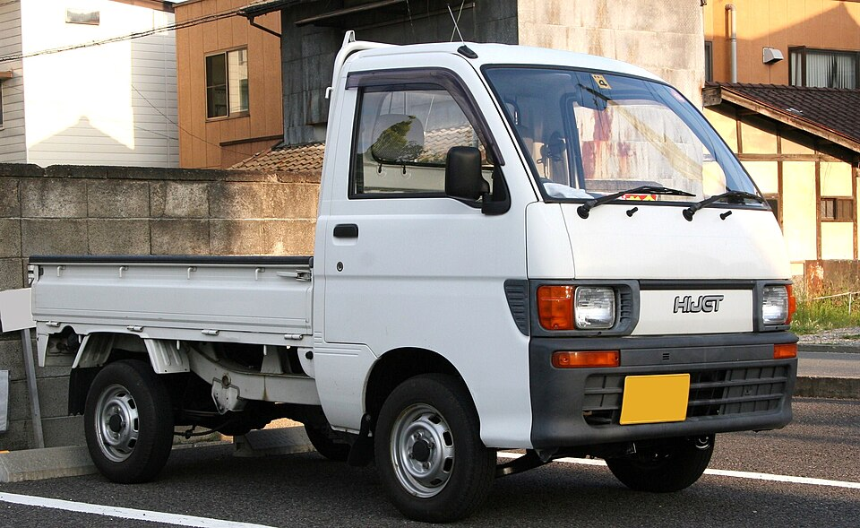
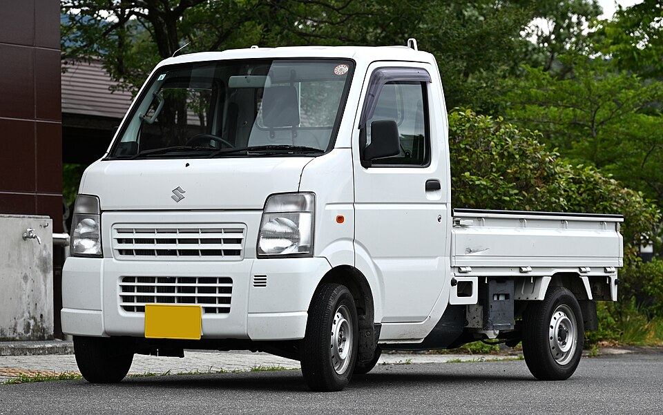
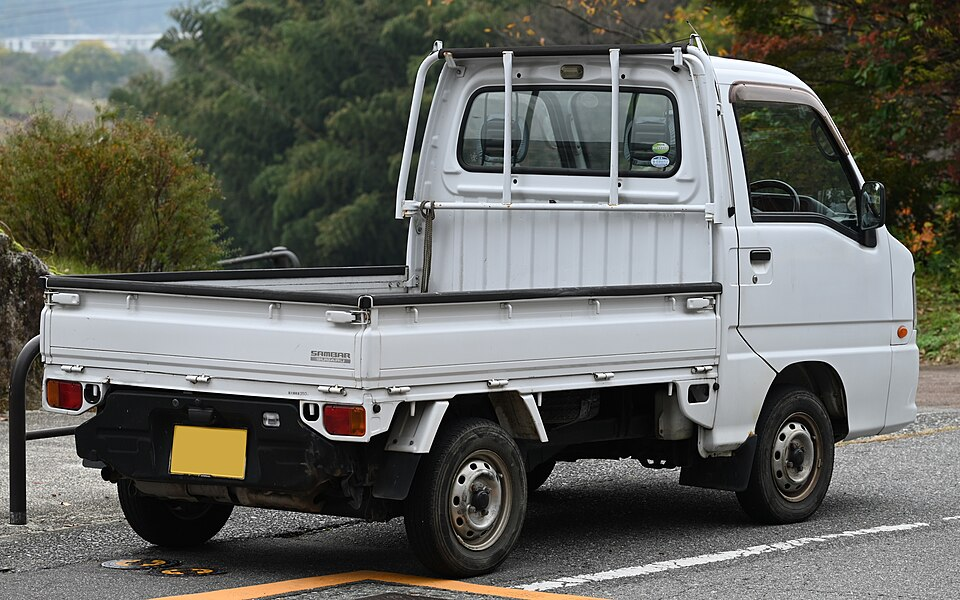
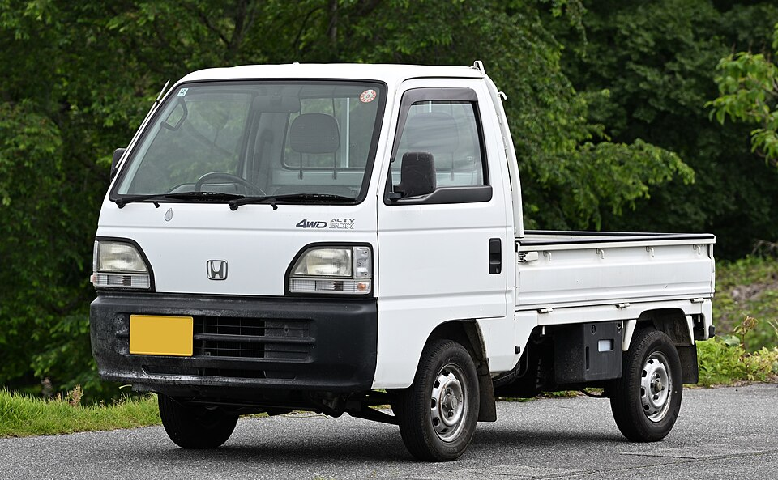
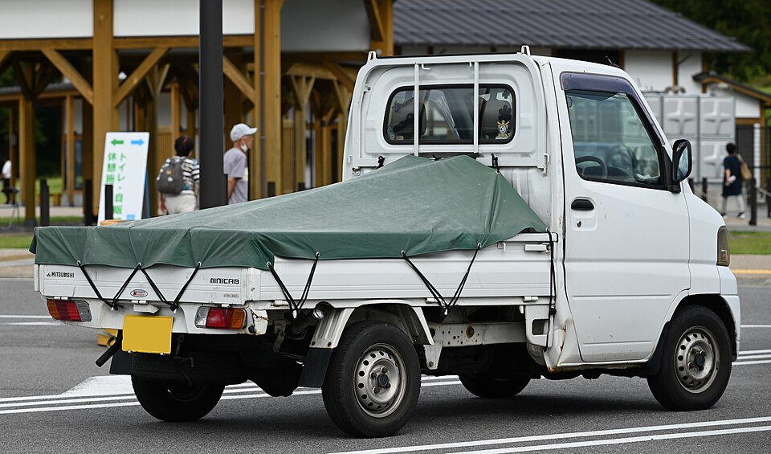

The five kei trucks Americans import most
Japanese auction averages cover 16,141 sales over 12 weeks (Aug 17 – Nov 9, 2026, 79 venues, published aggregates). The "pre-2002" column is the segment that matters for US buyers: vehicles become importable under the US 25-year rule, and 3,159 of those sales (20%) were already eligible. US dealer prices are medians of sampled dealer listings; BaT figures are medians of completed Bring a Trailer auctions. Yen converted at ¥158/$.

Daihatsu Hijet Truck
Est. US landed: $4,300–5,600 · US dealer median: $11,999
Indicative spread: $6,399–7,699
The widest gap of the five between what the truck costs in Japan and what US dealers ask. The spread is not profit — reconditioning, titling, transport and dealer margin come out of it (see the table notes).
| Model | JP auction avg pre-2002 (eligible) |
JP auction avg all years |
US dealer ask median |
BaT sold median |
Est. US landed cost |
Indicative spread (dealer − landed) |
|---|---|---|---|---|---|---|
| Daihatsu Hijet TruckS100P/S110P, S200P/S210P | ¥152,000≈ $962 | ¥338,000≈ $2,139 | $11,999 | $8,450 | $4,300–5,600 | $6,399–7,699 |
| Suzuki CarryDC51T/DD51T, DA52T/DB52T | ¥129,000≈ $816 | ¥275,000≈ $1,741 | $9,845 | $8,000 | $4,300–5,600 | $4,245–5,545 |
| Subaru SambarKS3/KS4, KV3, TT1/TT2 | ¥125,000≈ $791 | ¥159,000≈ $1,006 | $10,450 | $9,900 | $4,300–5,600 | $4,850–6,150 |
| Honda Acty TruckHA3/HA4, HA6/HA7 | ¥111,000≈ $703 | ¥150,000≈ $949 | $9,499 | — | $4,300–5,600 | $3,899–5,199 |
| Mitsubishi Minicab TruckU41T/U42T, DS51T(badge-eng. Carry) | ¥79,000≈ $500 | ¥163,000≈ $1,032 | $8,125 | — | $4,000–5,200 | $2,925–4,125 |
The spread is not profit: out of it come US-side reconditioning, titling, inland transport, dealer overhead and margin. It does show why the information gap exists — most US buyers cannot see the Japan side of the equation at all.
Landed cost calculator
Estimate the all-in cost of landing one pre-2002 kei truck in the US (RoRo shipping, US West Coast). Every assumption is editable — defaults are midpoints of published exporter fee schedules and documented 2026 shipments.
Notes: light trucks are subject to the 25% US "Chicken Tax" duty; vehicles over 25 years old are exempt from the additional 2025 tariffs. The inland figure is a rough allowance — actual cost depends on port and destination. Not included: state titling/registration and any reconditioning.
Model notes
Daihatsu Hijet Truck
Highest JP auction prices and highest US dealer asks of the five; Jumbo cab variant adds premium in US
Sources: Mirai Trading 12-wk dataset (checked 2026-11-09); carmanji dealer snapshot Mar-Nov 2026; Bring a Trailer results via carsearch dataset

Suzuki Carry
Largest US name recognition; lowest median odometer in JP data (73000 km); tightest price spread after Hijet
Sources: Mirai Trading 12-wk dataset; carmanji dealer snapshot; Bring a Trailer results

Subaru Sambar
Only 4-cylinder kei truck (EN07, optional supercharger); 84% 4WD share in JP sales; widest US price variance - condition is everything
Sources: Mirai Trading 12-wk dataset; carmanji dealer snapshot; Bring a Trailer results

Honda Acty Truck
49% of JP sales under 100000 JPY (older stock); real-time 4WD; production ended 2021 so supply is finite
Sources: Mirai Trading 12-wk dataset; carmanji dealer snapshot (38-truck Minicab/Acty sampling Nov 2026)

Mitsubishi Minicab Truck
Cheapest pre-2002 auction average of the five (79000 JPY); budget entry point in US market
Sources: Mirai Trading 12-wk dataset; carmanji dealer sampling Nov 2026
High-Value Desk: Japan-only performance cars, bought to order
A second desk for high-value JDM performance cars, run on a completely different basis from the kei trucks above: order-based only. You name the model and your maximum price; our licensed partner in Japan bids at auction within that cap; if the car is won, it is exported to you. We hold no inventory, and neither does the partner. Priority goes to models and specifications that were never officially sold in the US — cars you simply cannot buy locally at any price.
| Model | JP auction avg (public aggregate) |
Est. US landed (auction basis) |
US sold median (public results) |
Indicative spread (estimate only) |
Can you buy it in the US? |
|---|---|---|---|---|---|
| Nissan Skyline GT-R (R34)BNR34, 1999–2002 · 2002 model year becomes eligible through 2027 | ¥18,100,000≈ $113,000 | ≈ $133,000 | $153,000–155,000 | ≈ +$20,000 | Never sold in the US The Skyline GT-R was never officially sold new in the US. Every US car is a personal import. |
| Nissan Silvia Spec-R (S15)1999–2002 · final model year becomes eligible in 2027 | ¥2,800,000–3,200,000est. auction range | ≈ $24,000–27,000 | $35,294 avg | ≈ +$8,000–11,000 | Never sold in the US The US got the 240SX only up to the S14. The S15 was a Japan / Oceania model. |
| Nissan Skyline GT-R (R33)BCNR33, 1995–1998 · all years eligible | ¥7,300,000≈ $46,000 | ≈ $57,000 | $65,500 | ≈ +$8,500 | Never sold in the US Like the R34, never officially sold new in the US; all US examples are imports. |
| Mitsubishi Lancer Evolution IV–VIIimport-eligible model years only | below JP retailauction basis | — | $29,125 (IV–VI) | ≈ +$3,000–6,000 | Never sold in the US The US Lancer Evolution started with the VIII in 2003. Generations IV–VII were never offered. |
| Toyota Supra (JZA80)1993–2002 · 2002 builds become eligible Jul–Aug 2027 | below JP retail ¥8,564,000auction basis | $62,100–64,600retail basis | $73,666 | ≈ +$7,000–9,000even at JP retail | Sold in the US when new — not Japan-only. The Japan edge here is price and the depth of low-mileage, unmodified stock, not rarity. |
How to read this table: the JP auction averages are published aggregates (Loginet, Mar–May 2025 — Japanese prices have risen since, so current spreads are likely thinner). "Est. US landed" = winning bid + Japan-side fees (roughly ¥450,000–600,000) + RoRo ocean freight (Yokohama → US West Coast, roughly $2,850–3,000) + the current 12.5% US import duty on Japanese passenger cars. US-side customs clearance, registration and reconditioning are not included. The spread is an indicative estimate under those assumptions — not a guaranteed margin, and individual cars vary widely with grade, mileage and condition.
Order-based only — your cap price, our partner's auction access
- You set the ceiling. Tell us the model, grade and your maximum all-in bid. Our partner bids only within that cap — no cap, no bid.
- Deposit required. A refundable buyer deposit is taken before any bid is placed. High-value cars are never bid on unsecured.
- Condition standard. Auction grade 4 or above, no recorded repair history (修復歴なし), with the auction sheet translated for you before you commit. Cars outside the standard are not bid on, however wide the apparent spread.
- Nothing is stock. Cars are bought only against a confirmed order. Timelines are months, not days — that is the honest trade-off for auction pricing.
Also Japan-only, by inquiry: Land Cruiser 70/80 with the Japanese-market diesel (never offered in the US) and the Impreza WRX STI GC8 (the US never received the GC8 WRX/STI) — handled selectively, case by case. Parts: JDM-only parts that never existed on overseas models — engines such as the SR20DET, RB26DETT and 1JZ-GTE — are handled B2B order only, and can ride along with a vehicle shipment. No retail parts sales.